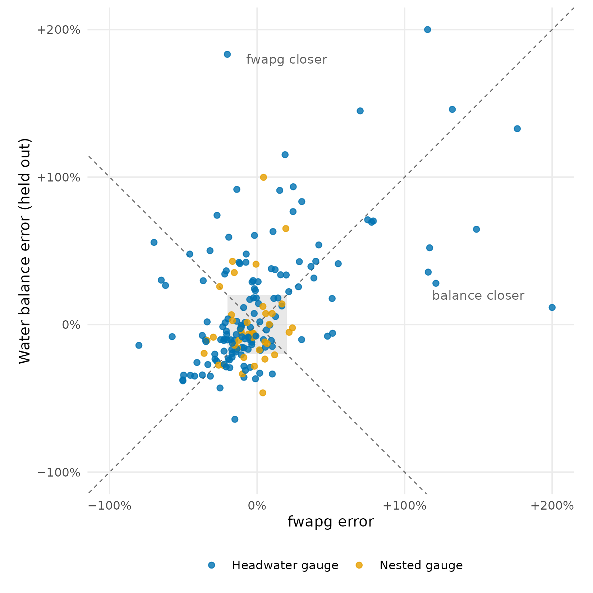
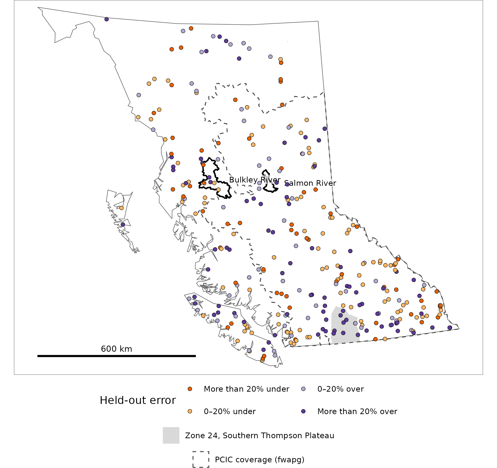
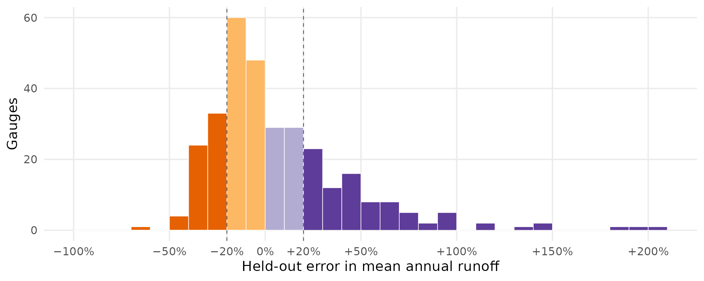
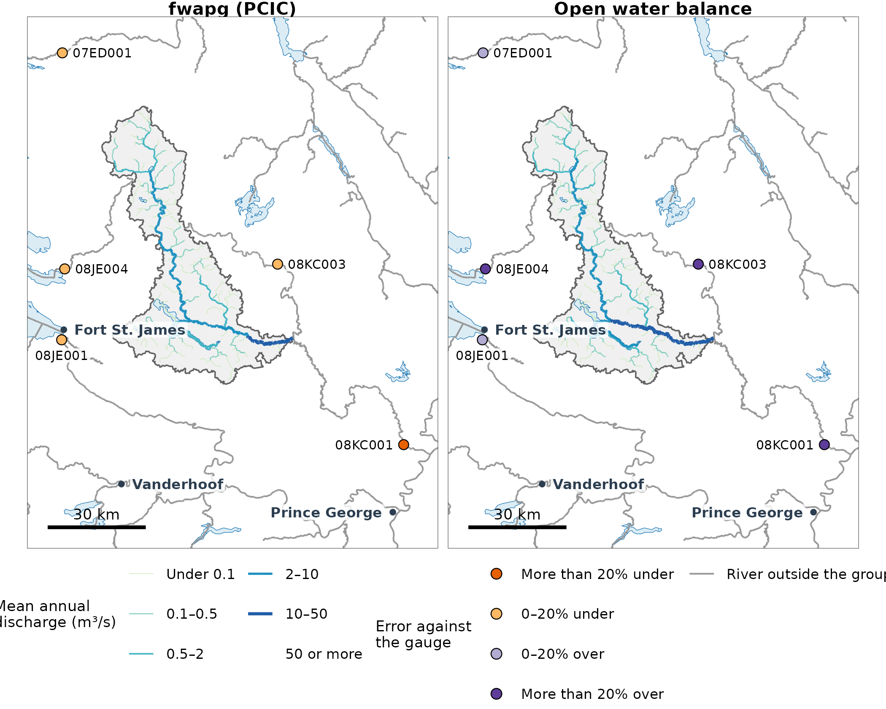
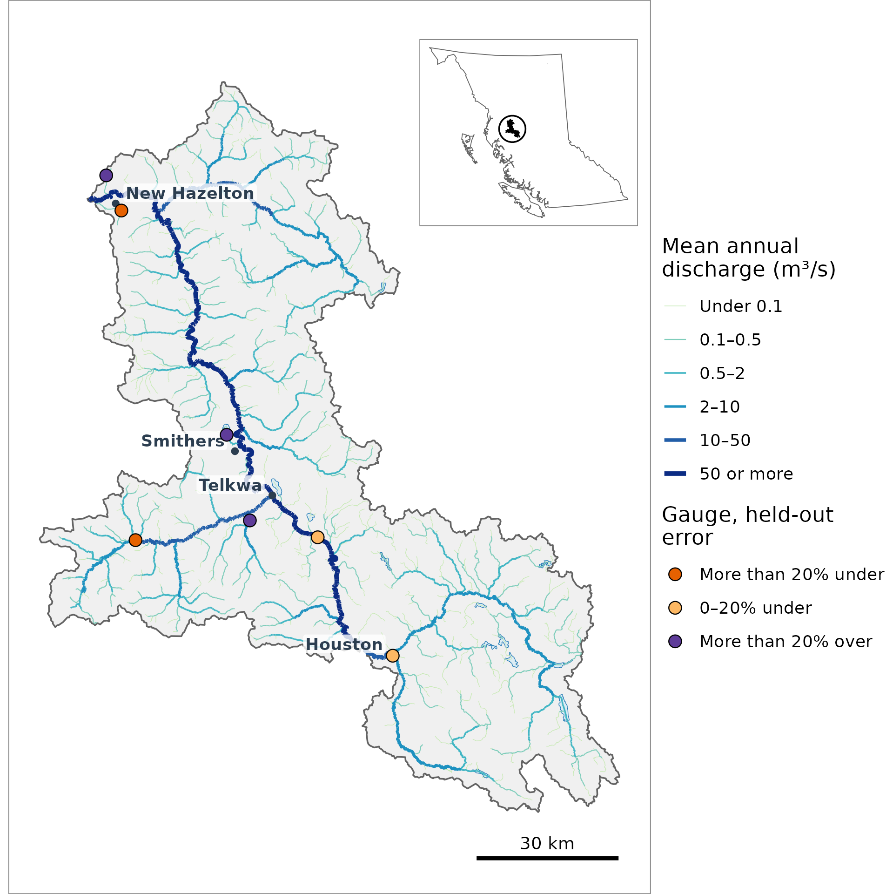
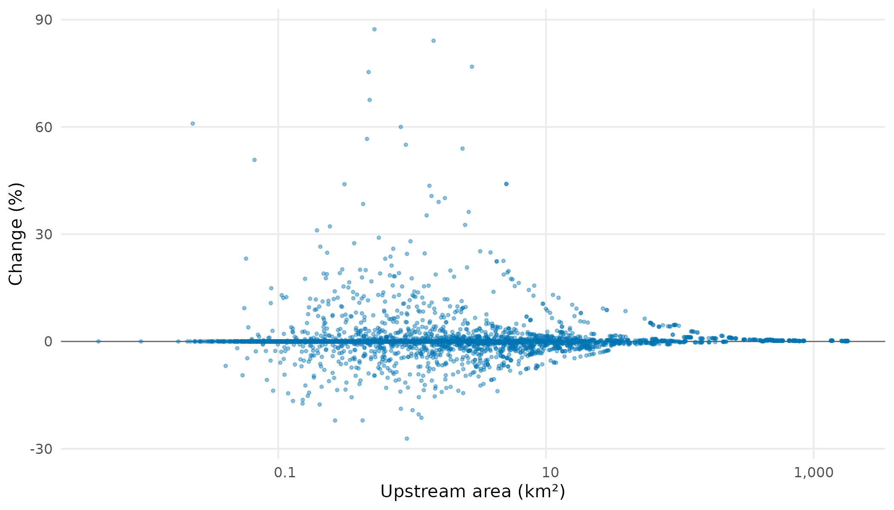

wet gives every stream segment of British Columbia’s Freshwater Atlas a mean annual discharge: the average flow, in cubic metres per second, over 1981–2010. This article explains what that number is, the two estimates behind it and what each suits, how close they come to measured flow, and where they are weakest.
What mean annual discharge is
A stream’s mean annual discharge is the volume of water that passes a
point in an average year, spread over the seconds in that year. It comes
from runoff: the depth of water, in millimetres a year,
that the land upstream yields to the stream once rain and snow have met
evaporation and plant use. Spread that depth over the area upstream and
it becomes a volume. A 100 km² basin yielding 300 mm a year passes about
0.95 m³/s: 0.3 m over 100 million m² is 30 million m³ a year, and a year
is 31.5 million seconds. Runoff in mm compares basins of any size;
discharge in m³/s is what a stream carries. wet_mm_to_m3s()
converts one to the other.
The terms used below:
- Freshwater Atlas (FWA): BC’s mapped stream network. A segment is one piece of a stream line. Each segment drains a small watershed polygon, and the province is split into 246 watershed groups, such as the Salmon River and the Bulkley River below.
- Stream order: 1 for a headwater stream, rising by one where two streams of the same order meet. The maps here draw order 3 and up.
- HYDAT: the Water Survey of Canada’s archive of flow measured at gauges. A calibration gauge is one of the 315 HYDAT gauges the water balance is fitted and scored on.
- PCIC hydrologic model output: runoff and baseflow from the Pacific Climate Impacts Consortium’s VIC-GL model, on a grid of 0.0625° cells. It covers the Peace, Fraser and Columbia.
- fwapg: an open database toolkit for the Freshwater Atlas. It publishes a mean annual discharge per segment from PCIC’s output, and “fwapg” below means that estimate.
- Open water balance: wet’s own estimate, after Chapman et al. (2018), the method behind the province’s water tools. Precipitation less evapotranspiration per grid cell is averaged upstream, then adjusted by hydrologic zone against HYDAT gauges. Its code ships with wet, and its inputs are public.
- Hydrologic zone: one of BC’s 29 regions of similar runoff. The balance fits one adjustment per zone.
- Held out: scored at a gauge the fit did not see. wet holds out each Water Survey sub-sub-drainage in turn (the first four characters of a station number, such as 08EE), fits on the rest, and predicts the gauges it held out. This is blocked cross-validation: whole blocks are held out, so a gauge’s neighbours on the same river cannot vouch for it.
- Headwater and nested gauges: a nested gauge’s basin holds another gauge’s; a headwater gauge’s does not.
- Error: modelled minus observed runoff, as a percentage of observed. One scale runs through every figure: more than 20% under, 0–20% under, 0–20% over, more than 20% over.
Two estimates
Two estimates of mean annual discharge are available per segment, built different ways. They suit different jobs.
| PCIC VIC-GL, through fwapg | wet’s open water balance | |
|---|---|---|
| What it is | A physically based model of snow, glaciers, soil and runoff, calibrated over 1985–2005 | Precipitation less evapotranspiration per grid cell, adjusted by hydrologic zone against HYDAT gauges |
| Where it has values | Peace, Fraser and Columbia (112 watershed groups); fwapg’s table leaves out rivers of order 8 and up | All of BC: every segment with a watershed |
| Fit at the 183 gauges both cover | 25.3% mean absolute error; 59% within ±20% | 30.3% mean absolute error (held out); 49% within ±20% |
| Largest rivers | Not in fwapg’s table; wet can rebuild them from PCIC’s
output (scripts/mad_basin.R, run for the Fraser) |
14.0% mean absolute error at the 18 gauges in PCIC’s area where fwapg has no value, mostly on these |
| Grid | 0.0625°, about 7 × 4 km | 30″, about 0.9 × 0.5 km |
| Time | Daily, 1945–2012; twelve climate projections to 2099 | 1981–2010 normals, annual and monthly |
| Open to rebuild | Output is public; the model runs are PCIC’s | Code ships with wet; its inputs are public and fetched by its scripts |
Which to use depends on the job:
- Inside the Peace, Fraser and Columbia, where fwapg has a value: PCIC’s model, which fits gauges more closely there.
- Outside those basins, on the rivers fwapg leaves out, or for one consistent layer across BC: the open water balance.
- Where both exist and the number matters: both, checked against the nearest gauge, as the Salmon River section below does.

Error at each of the 183 calibration gauges both estimates cover: fwapg’s across, the water balance’s (held out) up. The shaded square holds the gauges both put within ±20%. Between the dashed diagonals, the left and right wedges hold gauges where the balance is closer, the top and bottom wedges those where fwapg is. 2 gauges beyond +200% are drawn at the edge.
How close it is, province-wide
Out of sample, the balance’s annual runoff at a gauge is off by 28% on average, and 53% of gauges fall within ±20%. It does better on larger rivers. Nested gauges average 18% against 31% for headwater ones, and basins over 1,000 km² average 20% against 40% for those under 100 km². One zone stands out: zone 24, the Southern Thompson Plateau, a semi-arid interior plateau, where the 9 gauges average 93%.

The 315 calibration gauges, filled by the water balance’s held-out error at each. PCIC’s coverage, where fwapg also has values, is outlined; zone 24, the weakest, is shaded; the two groups mapped below are in black.

Held-out error at the 315 calibration gauges, in classes of 10%, coloured by the error scale. Gauges beyond +200% are counted in the last bar.
Salmon River: two estimates side by side
Both products cover the Salmon River, a headwater group of the Fraser (1,794 km²), and they differ there. The open water balance gives a median 1.37 times fwapg’s value per segment. The 5 gauges in and around the group show which is closer where.
The balance runs high at all of them, by +2% to +26%. At the 2 smallest basins, fwapg is within 5%, so the gap there is the balance’s. At the 3 larger ones, fwapg runs −14% to −25%. At the 2 of those off the group, the balance is within 3%, so the gap there is fwapg’s. At 08KC001, the gauge that drains the whole group, they bracket the observation: +26% against −25%.
| Gauge | Area (km²) | Observed (mm) | Water balance (held out) | fwapg |
|---|---|---|---|---|
| 08KC001 Salmon River near Prince George | 4,227 | 205 | +26% | −25% |
| 08KC003 Muskeg River north of Joanne Lake | 297 | 224 | +24% | −2% |
| 08JE004 Tsilcoh River near the Mouth | 439 | 180 | +18% | −1% |
| 07ED001 Nation River near Fort St. James | 4,356 | 401 | +2% | −14% |
| 08JE001 Stuart River near Fort St. James | 14,235 | 285 | +3% | −17% |

Mean annual discharge on 2,180 of the 2,181 Salmon River segments of order 3 or more, from fwapg (left) and the open water balance (right), with the gauges of the table filled by each product’s error. Rivers outside the group are grey.
Bulkley River: the water balance alone
fwapg has no values in the Bulkley River, in the Skeena (7,762 km²), which lies outside PCIC’s coverage. The open water balance is the only estimate there. Its 7 gauges average 37% held-out error, from −40% to +85%, in zones 08 and 09.
The map’s segment values come from the fit that includes every gauge, while the gauges are filled by the held-out error, so a gauge can look worse than the segment it sits on. Take 08EE004, Bulkley River at Quick (7,341 km²). It measured 561 mm a year, or 130.7 m³/s over its basin. Predicted with its sub-sub-drainage held out, the balance gives 500 mm, or 116.4 m³/s (−11%). The segment it sits on reads 118.4 m³/s on the map (−9%), closer, because that fit saw this gauge.

Mean annual discharge on 7,748 of the 7,755 Bulkley River segments of order 3 or more, from the open water balance, and the 7 calibration gauges in the group, filled by the balance’s held-out error. The keymap marks the group in BC.
| Gauge | Area (km²) | Observed (mm) | Water balance (mm, held out) | Error |
|---|---|---|---|---|
| 08EE004 Bulkley River at Quick | 7,341 | 561 | 500 | −11% |
| 08EE013 Buck Creek at the Mouth | 567 | 238 | 193 | −19% |
| 08EE020 Telkwa River below Tsai Creek | 364 | 1,234 | 792 | −36% |
| 08EE008 Goathorn Creek near Telkwa | 122 | 449 | 650 | +45% |
| 08EE025 Two Mile Creek in District Lot 4834 | 22 | 180 | 334 | +85% |
| 08EE012 Simpson Creek at the Mouth | 13 | 631 | 757 | +20% |
| 08EE028 Station Creek above Diversions | 10 | 894 | 539 | −40% |
Limits
In order of how much they affect a user:
- Coverage. Outside the Peace, Fraser and Columbia, the open water balance is the only estimate.
- Dry zones. In zone 24 and the other semi-arid interior zones, runoff is a small remainder of precipitation, so a small error in evapotranspiration is a large one in runoff.
-
The zone adjustment is a close call on headwater
basins. On headwater gauges it does not beat raw precipitation
less evapotranspiration, and it is kept by a recorded decision for what
it does on larger rivers (
research/water_balance_method.md, “Refit on HYDAT 2026-07-17”). Zones with too few gauges for their own adjustment get none, a choice tested on short-record gauges no fit uses. - Small streams. Gauged basins under 100 km² average 40% error, and 93% of the Salmon River’s watersheds with a stream are that small.
- Segments without a watershed. In the two groups mapped here, 8 segments of order 3 to 7 have no watershed polygon in the Freshwater Atlas lookup, so neither product gives them a value. They are left off the maps, which leaves short gaps in some streams.
How it is built
wet rebuilds fwapg’s numbers from PCIC’s output with its own code, and on every one of the 9,000 Salmon River segments fwapg gives a value, it matches fwapg to the five decimals fwapg stores.
fwapg gives each watershed the value of the PCIC cell under its centroid. A cell is 0.0625°, about 7 by 4 km here, so a small watershed gets one cell’s value. wet can instead weight every cell by the area it covers. Under 10 km², 11% of watersheds move by more than 5%, by up to 24% at the 99th percentile. Above 100 km², the 99th percentile is 2.8%, because a large basin averages many cells either way.

Change in mean annual runoff from area-weighted sampling, against centroid sampling, for the 4,248 Salmon River watersheds that carry a stream. Upstream area is on a logarithmic axis.
fwapg stores each watershed’s upstream area from an earlier build of the Freshwater Atlas. In the Fraser, 1,731 of 644,710 polygons carry a stored area that differs from the area accumulated from the Atlas today. None of them changes a Salmon River segment, so the match above does not test it. wet uses the accumulated area except when it reproduces fwapg.
The PCIC path for one headwater group, as
scripts/mad_parity.R runs it, needs fwapg and the PCIC
server. The open water balance is a pipeline of scripts
(scripts/wb_inputs.R to scripts/wb_output.R;
see the package’s CLAUDE.md).
library(wet)
conn <- DBI::dbConnect(RPostgres::Postgres(), dbname = "fwapg")
# PCIC VIC-GL runoff and baseflow over the group's extent, 1981-2010
bbox <- c(-124.12, 54.22, -123.12, 55.11)
runoff <- terra::rast(wet_pcic_fetch("RUNOFF", bbox, "1981-01-01", "2010-12-31"))
baseflow <- terra::rast(wet_pcic_fetch("BASEFLOW", bbox, "1981-01-01", "2010-12-31"))
mad_cell <- wet_runoff_annual(runoff) + wet_runoff_annual(baseflow) # mm/yr per cell
# every watershed polygon in the Fraser; those inside the extent get a cell value
ws <- wet_ws_fetch(conn, "100")
in_bb <- ws$lon >= bbox[1] & ws$lon <= bbox[3] & ws$lat >= bbox[2] & ws$lat <= bbox[4]
cells <- wet_ws_sample(mad_cell, ws[in_bb, c("watershed_feature_id", "lon", "lat")], "centroid")
up <- wet_upstream_mean(ws, cells, "total", irregular_pairs = wet_upstream_irregular(conn, "100"))
up$mad_m3s <- wet_mm_to_m3s(up$value, up$upstream_area_m2)Cached inputs. This article runs on saved outputs:
PCIC VIC-GL through scripts/mad_parity.R; the open water
balance from province run 962a9cc2c4 (annual AET cfu, HYDAT release
2026-07-17); fwapg’s values at the gauges; built 6 October 2026 at
commit c1d0945. Regenerated by
data-raw/segment_vignette_data.R. Map layers from the
Freshwater Atlas (fwapg), BC Geographic Names and the BC Hydrologic
Zones, by data-raw/segment_vignette_map.R.